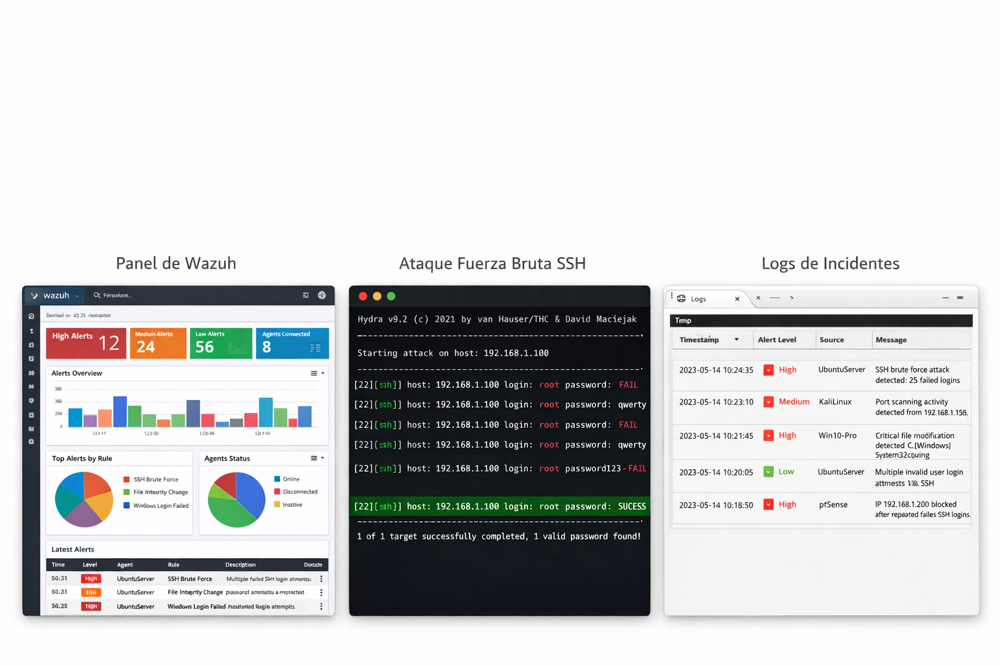

Laboratorio Blue Team enfocado en detección, análisis y respuesta ante ciberataques en entornos simulados.
Ver ProyectoEl laboratorio permite detectar amenazas en tiempo real mediante correlación de eventos y aplicar medidas de mitigación automatizadas como bloqueo de IPs.

Visualización del SIEM mostrando alertas generadas durante un ataque de fuerza bruta SSH, incluyendo múltiples intentos fallidos y eventos correlacionados detectados en tiempo real.